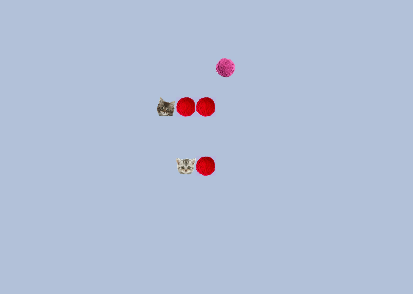
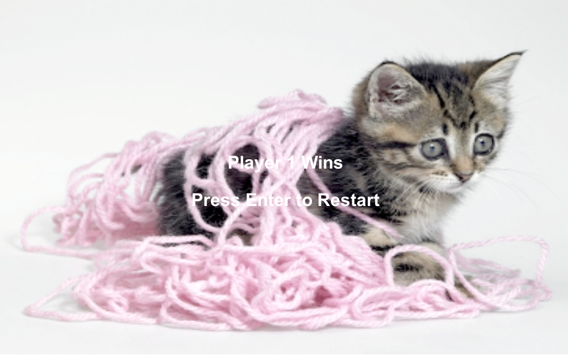
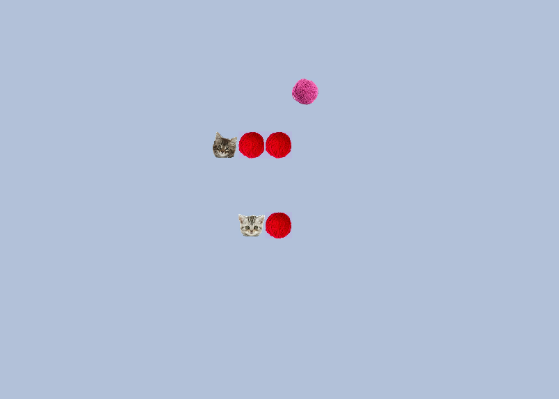
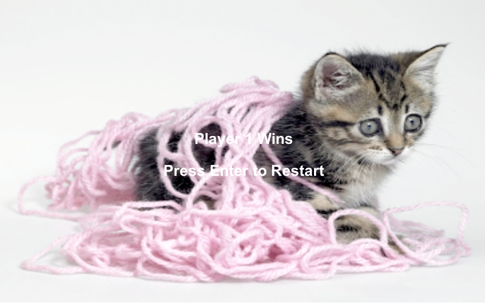
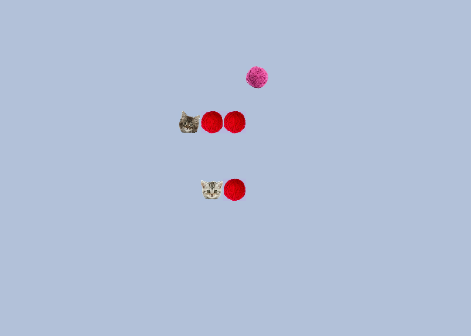
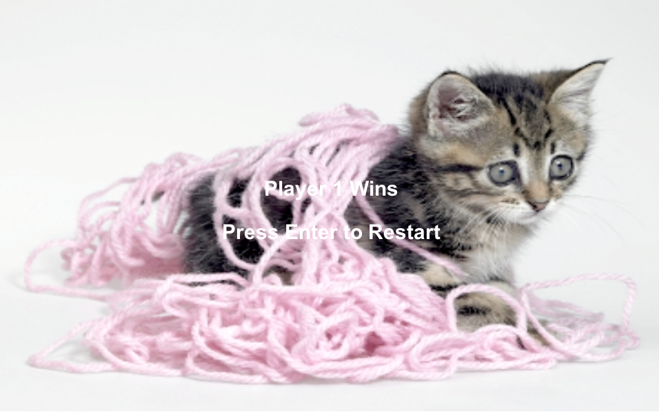
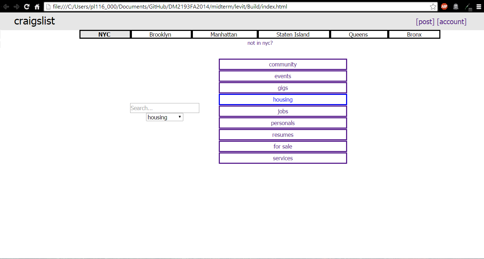

Projects
Here is where I highlight some of the past work I have done. These are mainly small examples of work I've done for myself or for school. For examples of my code and the sources for these projects, check out my Github. I am also currently working on the Eudyptula Challenge which is a series of programming exercises culminating in an upstream patch to the Linux kernel source tree.
Working with Java, I wrote a small chat application with server and client. The source can be found here.


Wantowski's K-Map Game is a game I used to play in high school involving Karnaugh Maps. This is my second project in Unity, the first I have completed on my own.


K-Maps!
Clash of Kittens is a game similar to snake, except with two players and a much cuter premise. Clash was written in C# and compiled with Unity. It was created in collaboration with Louis Albano, Cassian Whitehurst, and Mark Koutsantanou.
 





Kittens!
Craigslist is a cluttered, confusing site, so I created a calmer, more user friendly site. All while keeping its ugly craigslist roots. (This is the static build for the main site and housing section. Click housing and then go to see the other pages).



Craigslist!
More projects to come soon!